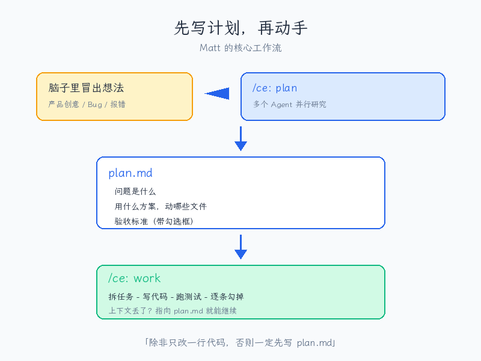
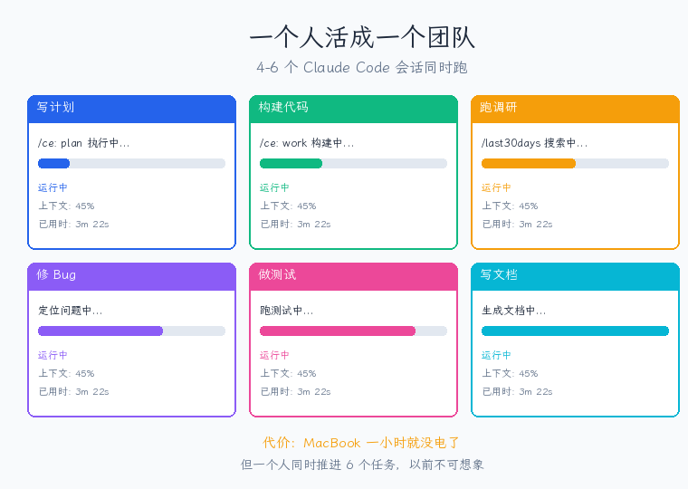
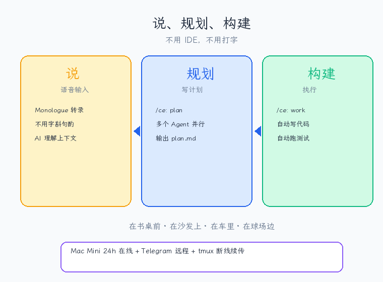

有人用 Claude Code 同时开 6 个窗口，一小时把 MacBook 电量跑光。
前几天刷到一篇长文，作者叫 Matt Van Horn。
他是 Lyft 的早期联合创始人之一，20 年软件工程经验，现在是 Claude Code 生态里最活跃的贡献者之一——Compound Engineering 插件的第三大贡献者，还开源了一个 26000 星的调研工具。
他写了一篇文章，把他用 Claude Code 的所有技巧全盘托出了。
看完以后我最大的感受是：我以为自己算用得深的了，结果人家根本不在同一个维度。
他有一句话让我印象特别深——不用 IDE，只用 plan.md 文件和语音。
听起来像吹牛，但看完他整套操作，你会发现这句话是认真的。
第一件事：脑子里冒出想法，第一反应是写计划

先写计划再动手
Matt 说他学到的最重要的一件事就是：不管脑子里冒出什么——一个产品创意、一个 GitHub 上的 bug 报告、终端里弹出的一条报错——第一反应永远是先让它写计划。
具体怎么操作？
他用的是一个叫 Compound Engineering 的插件，安装就一行命令。装完以后，输入 /ce: plan，Claude Code 会同时启动好几个研究 Agent 并行工作：
•一个去分析你的代码库，读文件、找模式、检查规范
•一个去翻你以前积累的经验文档
•需要的话还会有 Agent 去查外部的最佳实践
全部同时跑，最后汇总成一份 plan.md，写清楚：问题是什么、用什么方案、动哪些文件、验收标准带勾选框。
然后 /ce: work 接过这份计划去执行——拆任务、写代码、跑测试、逐条勾掉验收标准。
如果中间上下文丢了，开个新会话指向那份计划就能继续。计划文件就是一个永远不会丢的存档点。
他给自己定了一条铁律：除非只改一行代码，否则一定先写 plan.md。
过去 30 天他提交了 263 个 commit，背后是 70 个计划文件。平均每份计划产出将近 4 个 commit。计划越清楚，执行越快，返工越少。
第二件事：语音输入，但不是你想的那种
Matt 以前也觉得语音输入是鸡肋。苹果自带的听写功能让他想摔手机。
但语音转 LLM 完全不一样。
转录不需要完美，因为 Claude Code 能理解上下文。你可以含糊不清、说到一半跑题、重新起头，都没关系。
他用的工具叫 Monologue，能把你说的话直接输入到当前聚焦的应用里。你说话，它就往 Claude Code 里打字。他还专门买了个鹅颈麦克风放在办公桌上。
更夸张的是，他写那篇文章的时候，有一段是在特斯拉的自动驾驶模式下一边送孩子一边口述的。
语音输入过去一直不好用，核心问题是转录精度——你说的每个字都必须被准确识别。但当接收方从一个死板的文字处理器变成一个能理解上下文的 AI 之后，这个瓶颈就消失了。
你可以像跟同事说话一样跟 AI 交流，不用字斟句酌。
第三件事：6 个窗口同时跑，一个人活成一个团队

一个人活成一个团队
Matt 日常的工作状态是同时开 4 到 6 个终端窗口，每个跑一个独立的 Claude Code 会话。
一个在写计划，一个在根据另一份计划构建代码，一个在跑调研，一个在修上一个功能发现的 bug。
当一个窗口里计划正在生成的时候，他切到另一个窗口执行一份已经写好的计划。那边在构建的时候，第三个窗口又粘进去一个新 bug。等他切回第一个窗口，计划已经写好了，安静地等在那里。
为了让这种并行模式跑得通，他改了三个关键配置：
1.跳过权限确认 — 让每个会话完全自主运行，不用反复点"允许"
2.完成时播放提示音 — 可以走开干别的，听到声音再回来看结果
3.编辑器每 500 毫秒自动保存 — Claude Code 改了文件，编辑器里立刻能看到变化
整个体验就像在 Google Docs 上跟人协作，只不过协作者是 AI。
代价也很直观：他的 MacBook 大概一小时就没电了。他刚下单了新款 MacBook Pro。
第四件事：做决策之前，先看看社区在聊什么
Matt 在写计划之前，经常先跑一个叫 /last30days 的调研工具。
这个工具是他自己开源的，GitHub 上已经有 4500 颗星。它能并行搜索 Reddit、X、YouTube、Hacker News 等平台，几分钟内把某个话题在过去 30 天里的社区讨论全部拉回来。
他举了个例子。当时他在两个工具之间做选择，没去翻文档，直接跑了这个调研。几分钟后结果出来了：78 个 Reddit 帖子、76 条推文、22 个 YouTube 视频、15 个 Hacker News 讨论。
数据显示其中一个工具的 token 消耗比另一个少 82% 到 93%。
然后他把全部输出喂给 /ce: plan，写出来的计划基于社区当下真实的认知，不是六个月前的训练数据。
AI 模型的训练数据总是有滞后，但技术社区的讨论是实时的。
第五件事：午餐聊天直接变产品提案
Matt 讲了一个特别有意思的故事。
他跟一个候选人吃了顿午饭，聊了一个半小时，内容包括新产品想法、美食、餐厅、孩子，什么都聊。全程开着录音。
午饭后，他把完整的对话记录粘贴到 Claude Code 里，让它把这段对话变成一份产品提案。
关键在于，Claude Code 已经知道他们公司的代码在什么位置，还能访问他之前写的每一份战略文档。所以它处理这段对话的时候，不只是提取产品想法，而是在跟实际代码库和过去所有战略决策做交叉比对。
结果一次就生成了一份非常出色的提案。关于餐厅和寿司的部分自动忽略了。当晚发给了那个候选人，这个人后来全职加入了他们，现在就在做那个产品。
这背后的概念叫上下文的复利效应。每一份你写过的战略文档、每一个你做过的技术决策，如果都存下来，就会成为 AI 做下一次决策时的参考。时间越长，积累越多，AI 给出的建议就越精准。
第六件事：Mac Mini 变成 24 小时 AI 工作站

说规划构建
Matt 有一台 Mac Mini 专门跑 Claude Code，但他还做了两件很聪明的事。
第一件：通过 Telegram 远程操控。 吃饭的时候想到一个 bug，往 Telegram 里发一句 /ce: plan fix the timeout issue，等回到电脑前，计划已经在编辑器里等着了。
第二件：飞机上用 tmux。 先 tmux 到 Mac Mini 上，会话跑在那台机器上，笔记本只是一个窗口。WiFi 断了 20 分钟？重新连上就行，会话还在原来的地方，而且一直在干活。他从欧洲飞回来的整趟航班都在发布功能。
一台几千块的 Mac Mini，加上一些配置，就变成了一个 24 小时在线、随时可以远程调度的 AI 工作站。
一张表带走
最后留一句
Matt 在文章结尾写了一句话：
没有 IDE，没有代码。说、规划、构建。在书桌前、在沙发上、在车里、在球场边。
这套工作流最核心的其实不是工具，而是一个习惯：有想法的时候，先写计划。
工具会换，习惯不会。